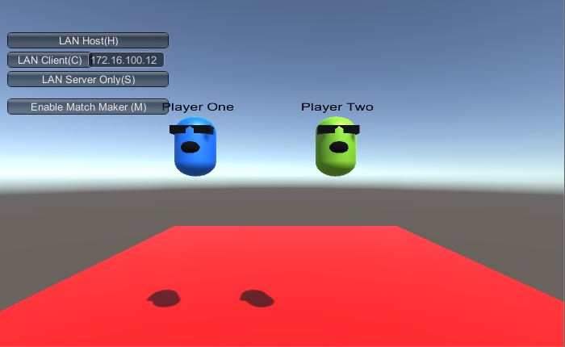
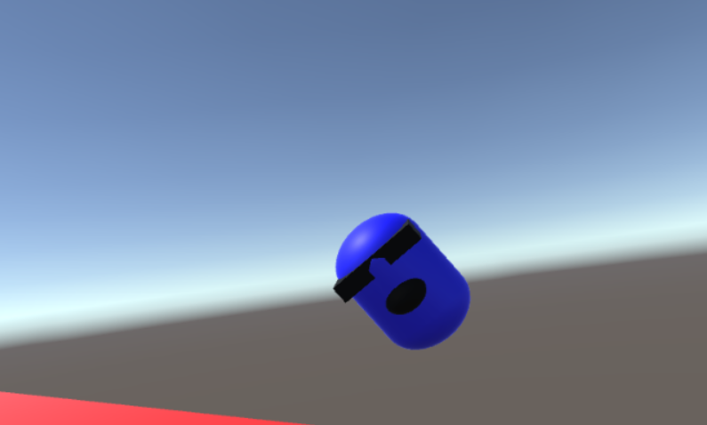

Project 1 Checkpoint - 4/7/2016
Mikhail Sorokin
Using the integrated networking system in Unity, which is called UNet, I was able to use an in-built GUI in order to make it create a sample environment for two players to be placed in. 
Created a placeholder avatar which will be useful in order to see position and rotation reflected across the network. (Seen below).

Both players can see each other, with one player being a different color from the other in order to distinguish the two. Their rotations with the headset are matched and they can see each other in the same world. (Seen below).

In conclusion, some issues I have been having with the multiplayer in VR is that it looks a bit choppy and more optimization is needed. Fixing this problem will be my goal to achieve as I am progressing towards the second checkpoint.
Joe Brosnihan
REPLACE ME(IMAGES, TEXT, ETC.)
Galen Steystuk
REPLACE ME(IMAGES, TEXT, ETC.)
Chris Castellano
REPLACE ME(IMAGES, TEXT, ETC.)